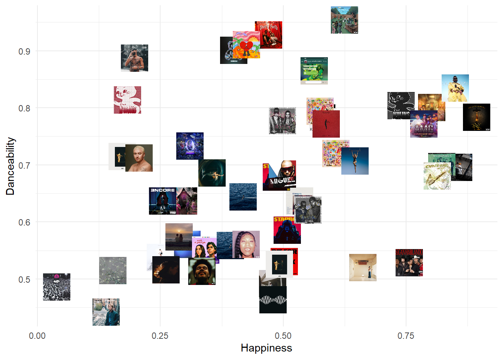

Chapter 21 Spotify API
You will need to install the following packages for this chapter (run the code):
# install.packages('pacman')
library(pacman)
p_load('spotifyr', 'tidyverse',
'lubridate')library(pacman)
pacman::p_load('spotifyr', # To access the API
'tidyverse', # Data wrangling and plots
'plotly', # Interactive plots
'ggimage', # Adding album covers to ggplot
'kableExtra',# Format tables
'httpuv', # To be able to access the Spotify URL
'httr') # In case you want to access the API w/o
# the package21.1 Provided services/data
- What data/service is provided by the API?
The Spotify Web API allows you to pull data from the platform on listed artists, albums, tracks, and playlists. Possible requests include getting information on track audio features (e.g., danceability, score, or pace) as well as popularity metrics of single tracks and albums. Beyond these general query options, you can also collect data on individual users’ (including your own) listening behavior. Accessing personal information, however, depends on users’ consent.
21.2 Prerequisites
- What are the prerequisites to access the API (authentication)?
21.2.1 Authentication
To access the Spotify API, you need to have a Spotify account. Don’t have one yet? Then sign up for free here! It does not matter whether you have a Premium account or not. Once you’re ready to use your Spotify account, you can set up a developer account to access the Spotify Web API. With the developer access, you can create new integrations and manage your Spotify credentials.
Once you have a developer account, you will need to create an app on the dashboard page.
21.2.3 Savely storing your credentials in the R environment
Via the app you created, you receive your client ID and client secret. You can find them on the app page in your Spotify developer account. Save both credentials in the R environment. For accessing your personal data, also add the redirect URI (the same one you added in your app’s settings!):
# Here you can store the credentials as follows:
# Sys.setenv(SPOTIFY_CLIENT_ID="xxx") #
# Sys.setenv(SPOTIFY_CLIENT_SECRET="xxx") #
# Sys.setenv(SPOTIFY_REDIRECT_URI="http://localhost:1410/") #
# Beware: The credential locals are case-sensitive, thus must be stored
# exactly as above to work correctly with the spotifyr package.
access_token <- get_spotify_access_token() # Stores your client ID in a
#local object21.3 Simple API call
- What does a simple API call look like?
In this chapter, we solely focus on how to make API calls via the corresponding spotifyr package. There also exists the option to access the Spotify API using the more common httr package. The latter option is more complicated than using the customized spotifyr package, though, as the manual authentication process is more difficult to implement. If you are interested in making API calls without the package, have a look at this detailed guide by Ray Heberer.
21.4 API access in R
- How can we access the API from R (httr + other packages)?
Instead of typing the API request into our browser or using the httr package, we can use the spotifyr package to easily access the API from R.
Note: For information on all possible queries available through the spotifyr wrapper, see the online documentation or this detailed introduction to the package which also informed this chapter. You can also check the R built-in help function on the package:
21.4.1 Playlist features
So let’s submit our first query to the API! In this example, we are interested in the features of current global top 50 tracks. To get this information, we first retrieve the Spotify playlist ID by opening the playlist we want to analyze in the browser and then copying the id part from the link. In our example of the Spotify global top 50 playlist:
Playlist link: https://open.spotify.com/playlist/37i9dQZEVXbMDoHDwVN2tF
Playlist ID: 37i9dQZEVXbMDoHDwVN2tF
Now that we have the ID, we can retrieve all information on tracks in the playlist by calling the function get_playlist_audio_features.
# Store the data in a dataframe
top50 <- get_playlist_audio_features(playlist_uris = '37i9dQZEVXbMDoHDwVN2tF')
# Global Top 50
# Add the tracks' rank to the dataset:
# the data comes sorted as listed in the playlist but does not contain a
# specific variable indicating the rank. Therefore, we create a new
# variable that contains the rank in ascending order, ranging from 1 to
# 50.
top50$rank <- seq.int(nrow(top50))
# So far, so good. Looking at the data, artist names are currently stored
# in lists.
# The next snippet moves artist names into a new variable for easier
# access. Also, we add the album cover link to a new variable image to
# plot the covers later.
for (i in 1:50) {
top50$artist[i] <- top50[[28]][[i]]$name
top50$image[i] <- c(top50[[49]][[i]]$url[2], size=10, replace = TRUE)
}# Now that we have the data set ready to go, let's take a look at what
# variables are in there.
names(top50) %>%
kbl() %>%
kable_styling(bootstrap_options = c("hover")) %>%
scroll_box(width = "100%", height = "300px")| x |
|---|
| playlist_id |
| playlist_name |
| playlist_img |
| playlist_owner_name |
| playlist_owner_id |
| danceability |
| energy |
| key |
| loudness |
| mode |
| speechiness |
| acousticness |
| instrumentalness |
| liveness |
| valence |
| tempo |
| track.id |
| analysis_url |
| time_signature |
| added_at |
| is_local |
| primary_color |
| added_by.href |
| added_by.id |
| added_by.type |
| added_by.uri |
| added_by.external_urls.spotify |
| track.artists |
| track.available_markets |
| track.disc_number |
| track.duration_ms |
| track.episode |
| track.explicit |
| track.href |
| track.is_local |
| track.name |
| track.popularity |
| track.preview_url |
| track.track |
| track.track_number |
| track.type |
| track.uri |
| track.album.album_group |
| track.album.album_type |
| track.album.artists |
| track.album.available_markets |
| track.album.href |
| track.album.id |
| track.album.images |
| track.album.is_playable |
| track.album.name |
| track.album.release_date |
| track.album.release_date_precision |
| track.album.total_tracks |
| track.album.type |
| track.album.uri |
| track.album.external_urls.spotify |
| track.external_ids.isrc |
| track.external_urls.spotify |
| video_thumbnail.url |
| key_name |
| mode_name |
| key_mode |
| rank |
| artist |
| image |
In the next step, we want to take a closer look at track popularity. That is, how does a track’s rank on the top 50 playlist correlate with Spotify’s popularity measure? Note that the index is calculated by Spotify not solely based on a track’s recent stream count, but also taking other metrics into account. Beyond, we’ll have a look at more fun features such as a track’s danceability and valence (happiness).
top50 %>% select(rank, track.name, artist, track.popularity,
danceability, valence) %>%
kbl() %>%
kable_styling(bootstrap_options = c("hover")) %>%
scroll_box(width = "100%", height = "300px")| rank | track.name | artist | track.popularity | danceability | valence |
|---|---|---|---|---|---|
| 1 | Die For You - Remix | The Weeknd | 92 | 0.531 | 0.5020 |
| 2 | TQG | KAROL G | 92 | 0.720 | 0.6070 |
| 3 | Flowers | Miley Cyrus | 100 | 0.707 | 0.6460 |
| 4 | Kill Bill | SZA | 93 | 0.644 | 0.4180 |
| 5 | Boy’s a liar Pt. 2 | PinkPantheress | 94 | 0.696 | 0.8570 |
| 6 | As It Was | Harry Styles | 89 | 0.520 | 0.6620 |
| 7 | Shakira: Bzrp Music Sessions, Vol. 53 | Bizarrap | 96 | 0.778 | 0.4980 |
| 8 | Creepin’ (with The Weeknd & 21 Savage) | Metro Boomin | 94 | 0.715 | 0.1720 |
| 9 | Yandel 150 | Yandel | 85 | 0.783 | 0.5800 |
| 10 | Calm Down (with Selena Gomez) | Rema | 92 | 0.801 | 0.8020 |
| 11 | Unholy (feat. Kim Petras) | Sam Smith | 84 | 0.712 | 0.2060 |
| 12 | Tormenta (feat. Bad Bunny) | Gorillaz | 85 | 0.637 | 0.2970 |
| 13 | Shorty Party | Cartel De Santa | 79 | 0.928 | 0.4700 |
| 14 | La Bachata | Manuel Turizo | 93 | 0.835 | 0.8500 |
| 15 | I’m Good (Blue) | David Guetta | 93 | 0.561 | 0.3040 |
| 16 | Die For You | The Weeknd | 87 | 0.586 | 0.5080 |
| 17 | Last Night | Morgan Wallen | 77 | 0.492 | 0.4780 |
| 18 | Anti-Hero | Taylor Swift | 91 | 0.637 | 0.5330 |
| 19 | Escapism. | RAYE | 78 | 0.538 | 0.2500 |
| 20 | Here With Me | d4vd | 91 | 0.574 | 0.2880 |
| 21 | OMG | NewJeans | 91 | 0.804 | 0.7390 |
| 22 | Hey Mor | Ozuna | 89 | 0.901 | 0.3990 |
| 23 | Until I Found You (with Em Beihold) - Em Beihold Version | Stephen Sanchez | 90 | 0.551 | 0.3420 |
| 24 | Starboy | The Weeknd | 89 | 0.679 | 0.4860 |
| 25 | Another Love | Tom Odell | 60 | 0.442 | 0.1390 |
| 26 | X SI VOLVEMOS | KAROL G | 81 | 0.794 | 0.5750 |
| 27 | golden hour | JVKE | 88 | 0.515 | 0.1530 |
| 28 | La Jumpa | Arcángel | 85 | 0.887 | 0.1970 |
| 29 | Players | Coi Leray | 89 | 0.954 | 0.6240 |
| 30 | Quevedo: Bzrp Music Sessions, Vol. 52 | Bizarrap | 91 | 0.621 | 0.5500 |
| 31 | I Wanna Be Yours | Arctic Monkeys | 90 | 0.464 | 0.4790 |
| 32 | I Ain’t Worried | OneRepublic | 45 | 0.697 | 0.8220 |
| 33 | AMG | Natanael Cano | 89 | 0.772 | 0.7860 |
| 34 | ceilings | Lizzy McAlpine | 86 | 0.516 | 0.2610 |
| 35 | Snooze | SZA | 89 | 0.559 | 0.3920 |
| 36 | Feliz Cumpleaños Ferxxo | Feid | 86 | 0.865 | 0.5630 |
| 37 | Sure Thing | Miguel | 90 | 0.684 | 0.4980 |
| 38 | PRC | Peso Pluma | 88 | 0.784 | 0.8930 |
| 39 | Bones | Imagine Dragons | 83 | 0.772 | 0.5870 |
| 40 | Just Wanna Rock | Lil Uzi Vert | 89 | 0.486 | 0.0385 |
| 41 | on the street (with J. Cole) | j-hope | 83 | 0.681 | 0.8130 |
| 42 | Ditto | NewJeans | 89 | 0.814 | 0.1830 |
| 43 | Mockingbird | Eminem | 89 | 0.637 | 0.2540 |
| 44 | Under The Influence | Chris Brown | 89 | 0.733 | 0.3100 |
| 45 | Me Porto Bonito | Bad Bunny | 89 | 0.911 | 0.4250 |
| 46 | Superhero (Heroes & Villains) [with Future & Chris Brown] | Metro Boomin | 88 | 0.526 | 0.4920 |
| 47 | Bebe Dame | Fuerza Regida | 80 | 0.529 | 0.7560 |
| 48 | Blinding Lights | The Weeknd | 88 | 0.514 | 0.3340 |
| 49 | Rich Flex | Drake | 89 | 0.561 | 0.4240 |
| 50 | Watch This - ARIZONATEARS Pluggnb Remix | Lil Uzi Vert | 85 | 0.686 | 0.3550 |
Let’s plot this data!
f1 <-
ggplot(data = top50, aes(x = track.popularity, y = rank, text = (
paste(
"Track:",
track.name,
"<br>",
"Artist:",
artist,
"<br>",
"Release date:",
track.album.release_date
)
))) +
geom_point() +
theme_minimal() +
ylab("Playlist rank") +
xlab("Popularity")
# This code snippet creates an interactive version of our plot that allows you to
# hover over each data point to receive more information.
ggplotly(f1, tooltip = c("text"))We can see in the graph above that tracks in the top 50 playlist are definitely rather on the popular side, however, some tracks have a comparably low popularity score. When you look at the interactive plotly graph, you’ll be able to identify the outlier that ranks below 70 on Spotify’s the popularity scale despite being in the charts: Another Love by Tom Odell (2013),
While the exact estimation of the score is confidential, there exists evidence that the age of a track factors into its popularity score. That way, two tracks with 100,000 streams can have different popularity scores dependent on when they were released. In the algorithm’s logic, the more recent track gained the same number of streams in a shorter time and is therefore evaluated as more popular.
Applying this to our outliers, we can see that the age of both tracks likely affects their low popularity score.
Spotify also provides you with album cover links in varying sizes, so why not use the covers instead of black scatterpoints in a plot? Before we used geom_point for the scatterplot, now we simply need to replace that command with geom_image and specify the variable containing the image link. In the following plot, we explore the correlation between track happiness and danceability.
ggplot(data = top50, aes(x = valence, y = danceability, text = (
paste(
"Track:",
track.name,
"<br>",
"Artist:",
artist
)
))) +
geom_image(aes(image=image), asp = 1.7) +
theme_minimal() +
ylab("Danceability") +
xlab("Happiness") 
21.4.2 Your Spotify data
You can also analyze your personal listening behavior with the Spotify API. For example, this snippet using the get_my_top_artists_or_tracks function allows you to explore your favorite artists of all time.
## Finding all time favorite artists
topartists <- get_my_top_artists_or_tracks(type = 'artists',
time_range = 'long_term', limit = 50) %>%
select(name, genres) %>%
rowwise %>%
mutate(genres = paste(genres, collapse = ', ')) %>%
ungrouptopartists$rank <- seq.int(nrow(topartists)) # add rank variable
topartists %>%
select(rank, name, genres) %>%
kbl() %>%
kable_styling(bootstrap_options = c("hover")) %>%
scroll_box(width = "100%", height = "300px")You can retrieve your all-time favourite tracks by still using the get_my_top_artists_or_tracks function but changing type= to tracks.
As you have seen, the Spotify API opens up many opportunities for data analysis. The functionality of the Spotifyr wrapper goes beyond the simple examples demonstrated here. Now it’s your time to explore the data!
21.5 Social science examples
So far, not much has been done with the Spotify API and music data from the field of social sciences (this is where you could step in!). Some notable exceptions below:
MacTaggart (2018) and Lacognata and Poole (2021) both looked at the link between music and politics. At an aggregate level, MacTaggart (2018) examined the association of chart trends within pop music and trends within politics in the US from 1959 to 2016. The author finds that musical trends reflect trends in society and politics.
Lacognata and Poole (2021) investigated a potential correlation of political orientation, personality traits, and music taste. The authors used individual-level survey data and linked these data to respondents’ Spotify accounts. However, they did not find any association between music taste and neither political orientation nor personality traits.
In a recent poster presentation, Song, Chun, and Elkins (2021) examined how the Covid-19 pandemic affected emotion-driven listening behavior with the help of the Spotify AP. The authors used monthly Spotify chart data from December 2019 to December 2021 and extracted measures on the valence, energy, and danceability of the tracks (we already know these measures from our own example on the global top 50 tracks). The authors did not find any correlation of tracks’ energy and danceability with Covid-19 related events. At the same time, Song et al did find that the tracks’ valence reflects the course of the pandemic: When the Covid-19-vaccine got distributed, people listened to happier music, while when the news of the Omicron variant spread, less happy tracks became more popular.
For more inspiration, you can also check out Spotify’s Developer Showcase website!
What will you do with the Spotify API?